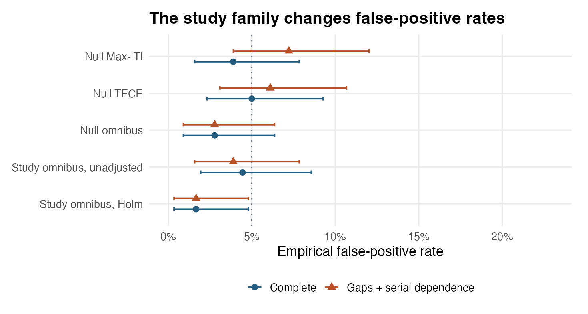
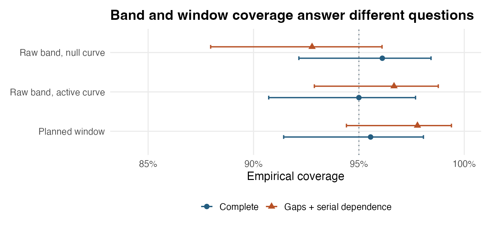

| Outcome | Target | Complete | Stressed |
|---|---|---|---|
| Null trajectory, any Max-|T| lag | 5% | 3.9% (1.6–7.8%) |
7.2% (3.9–12.0%) |
| Null trajectory, any TFCE lag | 5% | 5.0% (2.3–9.3%) |
6.1% (3.1–10.7%) |
| Null trajectory, omnibus | 5% | 2.8% (0.9–6.4%) |
2.8% (0.9–6.4%) |
| Null trajectory, raw band coverage | 95% | 96.1% (92.2–98.4%) |
92.8% (88.0–96.1%) |
| Active trajectory, raw band coverage | 95% | 95.0% (90.7–97.7%) |
96.7% (92.9–98.8%) |
| Study family (2 null parcels), unadjusted omnibus | — | 4.4% (1.9–8.6%) |
3.9% (1.6–7.8%) |
| Study family (3 parcels), Holm-adjusted omnibus | 5% | 1.7% (0.3–4.8%) |
1.7% (0.3–4.8%) |
| Active trajectory, planned window CI coverage | 95% | 95.6% (91.4–98.1%) |
97.8% (94.4–99.4%) |
Calibration of multi-lag trajectory inference
Step 5 introduced medusa_multilag_infer() for joint peri-event trajectory estimation, simultaneous confidence bands, 1D TFCE, epoch omnibus testing, and planned window contrasts. This chapter evaluates the empirical Type I error and 95% confidence-band coverage of medusa::medusa_multilag_infer() across 180 independent synthetic cohorts per scenario, separating two distinct error-rate targets:
- Within-trajectory familywise calibration: Controlling false positives and simultaneous band coverage across all lags of a single prespecified
(parcel, term)trajectory. - Study-wide familywise calibration: Controlling false discoveries when an analyst tests multiple parcels (here, one active parcel and two null parcels) simultaneously.
Simulation Design
Each Monte Carlo replication simulates 20 participants, 2 runs per participant, 6 peri-event lags (0 to 5 s), 1 active parcel, and 2 null parcels (Null A and Null B):
- Realistic heteroskedasticity and cross-lag/cross-parcel dependence: Inter-trial intervals jitter between 3 and 9 seconds; Run 2 has \(1.6\times\) the residual SD of Run 1; residuals share common cross-parcel noise and positive cross-lag autocorrelation; and true participant slopes vary randomly around the population trajectory in every parcel.
- Two benchmark regimes (
180replications each):Complete / independent trials: Complete lag support for all 20 participants and independent trial innovations within each run.Gaps / serially dependent trials: Adds serial autocorrelation in both behavioral predictor and neural trial residuals, drops random subsets of trials within runs, and censors the final edge lag entirely in 3 of the 20 participants. Undermedusa_multilag_infer()’s available-case cross-lag pooling, all 20 participants are retained at supported lags (0–4s) while the 17 uncensored participants inform lag5s.
- Inference settings: Each replication runs the panel pathway of
medusa_multilag_infer()withtrajectory_mode = "none",contrast_source = "unsmoothed",799studentized Wishart null draws per trajectory, and a plannedlate_minus_earlycontrast ([3, 4] sminus[0, 1] s).
Note what this benchmark isolates: it starts at the participant trial panel to test group pooling, available-case edge support, studentized Wishart null calibration, and study-wide Holm adjustment under known lag covariance and serial trial dependence. End-to-end HRF/deconvolution estimation is evaluated separately in the 14-study validation suite.
Calibration Scorecard
Parentheses report exact Clopper–Pearson 95% binomial intervals for Monte Carlo uncertainty (\(N = 180\) replications). Single-trajectory null metrics evaluate the prespecified Null A parcel in every replication; study-family metrics count rejecting either Null A or Null B when testing all three parcels (Active, Null A, Null B).

Key findings from the rejection and coverage benchmarks
- Calibrated within-trajectory Type I error (
Max-|T|,TFCE,Omnibus): Under studentized Wishart covariance draws, single-trajectory null false-positive rates sit squarely around the 5% target in the complete design (3.9% forMax-|T|, 5.0% forTFCE, and 2.8% forOmnibus), and remain well controlled under serial trial dependence and edge-lag missingness (7.2%, 6.1%, and 2.8%; all 95% Monte Carlo intervals contain 5%). - Study-wide multiplicity control via Holm: Applying Holm across the 3-parcel family (
Active,Null A,Null B) holds familywise false-discovery rates to 1.7% and 1.7%—scaling cleanly to larger parcel parcellations where unadjusted epoch tests would accumulate false positives across dozens of regions.

- Simultaneous 95% confidence bands and window contrasts achieve nominal coverage: Across all 6 lags simultaneously, the raw
Max-|T|band covers the entire true curve in 96.1% (null) and 95.0% (active) of complete replications, and 92.8% (null) and 96.7% (active) under gapped/serial stress. The plannedlate_minus_earlywindow contrast (contrast_source = "unsmoothed") covers the true population difference in 95.6% and 97.8% of replications, with negligible mean bias (+0.005 and +0.002 slope units).
Practical Guidance Summary
| Inferential target | Recommended medusa_multilag_infer() quantity |
Scope reminder |
|---|---|---|
Localizing individual active lags within one (parcel, term) profile |
p_maxT and simultaneous band conf.low.sim / conf.high.sim |
Controls FWER across lags of one trajectory; adjust across parcels/terms if searching multiple regions. |
| Detecting sustained same-sign deflections | p_tfce |
Summarizes contiguous cluster support across thresholds; do not interpret the smallest p_tfce lag as exact latency onset. |
| Screening parcels/terms for any epoch-wide effect | One omnibus_p per (parcel, term) + p.adjust(..., method = "holm") or "BY" across the planned study family |
Prevents study-wide false-positive inflation across parcellations. |
| Comparing early vs. late epoch phases | $contrasts with contrast_source = "unsmoothed" |
Prespecify early and late lag windows before viewing group curves. |
Reproduce the Calibration Study
Show reproduction commands
Rscript simulate.R
Rscript figures.R
quarto render medusa_pr62_calibration.qmdCalibration summary · Replicate draws · Simulation source · Figure source